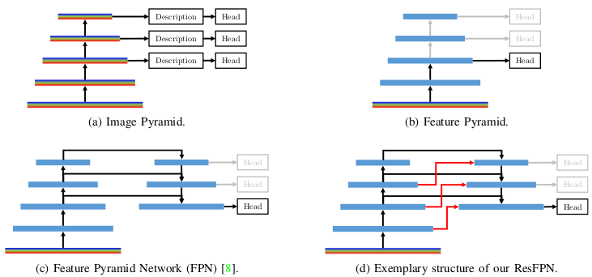
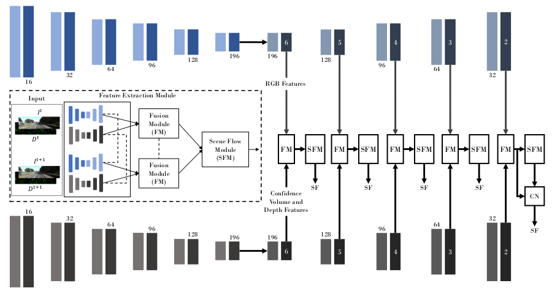

|  |
ResFPN: Residual Skip Connections in Multi-Resolution Feature Pyramid Networks for Accurate Dense Pixel
Rishav*,
René Schuster*,
Ramy Battrawy,
Oliver Wasenmüller,
and Didier Stricker
International Conference on Pattern Recongnition (ICPR), 2020 (Oral, top 5%)
[Paper] [YouTube]
|
|  |
DeepLiDARFlow: A Deep Learning Architecture For Scene Flow Estimation Using Monocular Camera and Sparse LiDAR
Rishav*,
Ramy Battrawy*,
René Schuster,
Oliver Wasenmüller,
and Didier Stricker
International Conference on Intelligent Robots and Systems (IROS), 2020
[Paper] [Code]
[Project Page]
|